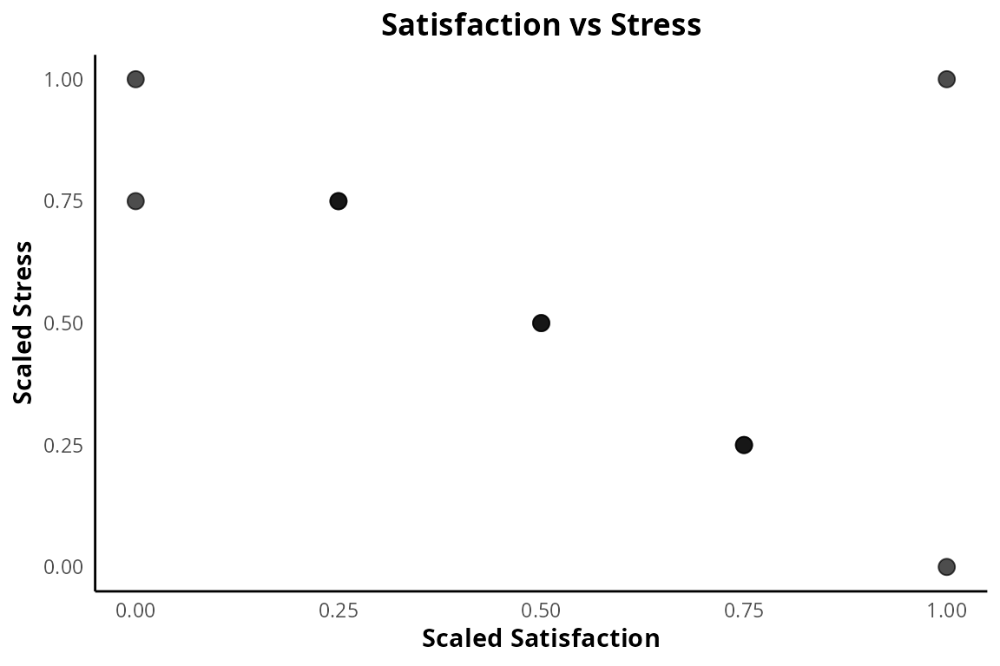

Psych Tools
getting-started.RmdIntroduction
This package helps you clean raw psychology survey data and create APA-style plots for research papers.
1. Scaling Likert Responses
We scale the 1-5 Likert responses for satisfaction and stress into a 0 to 1 range.
survey_demo$satisfaction_scaled <- scale_responses(survey_demo$satisfaction)
survey_demo$stress_scaled <- scale_responses(survey_demo$stress)2. Working with Keyword Tags
We split the comma-separated keyword tags from the open-ended responses into a clean list.
kw <- split_keywords(survey_demo$tags)
str(kw)
#> List of 10
#> $ : chr [1:2] "anxiety" "depression"
#> $ : chr [1:2] "stress" "fatigue"
#> $ : chr [1:2] "happiness" "satisfaction"
#> $ : chr "anxiety"
#> $ : chr [1:2] "fatigue" "stress"
#> $ : chr "lethargy"
#> $ : chr "happiness"
#> $ : chr [1:2] "satisfaction" "stability"
#> $ : chr "depression"
#> $ : chr [1:2] "fatigue" "lethargy"3. Creating APA-style Plots
We create a scatter plot with the scaled scores and apply our custom APA theme.
library(ggplot2)
ggplot(survey_demo, aes(x = satisfaction_scaled, y = stress_scaled)) +
geom_point(size = 3, alpha = 0.7) +
labs(title = "Satisfaction vs Stress", x = "Scaled Satisfaction", y = "Scaled Stress") +
theme_apa()